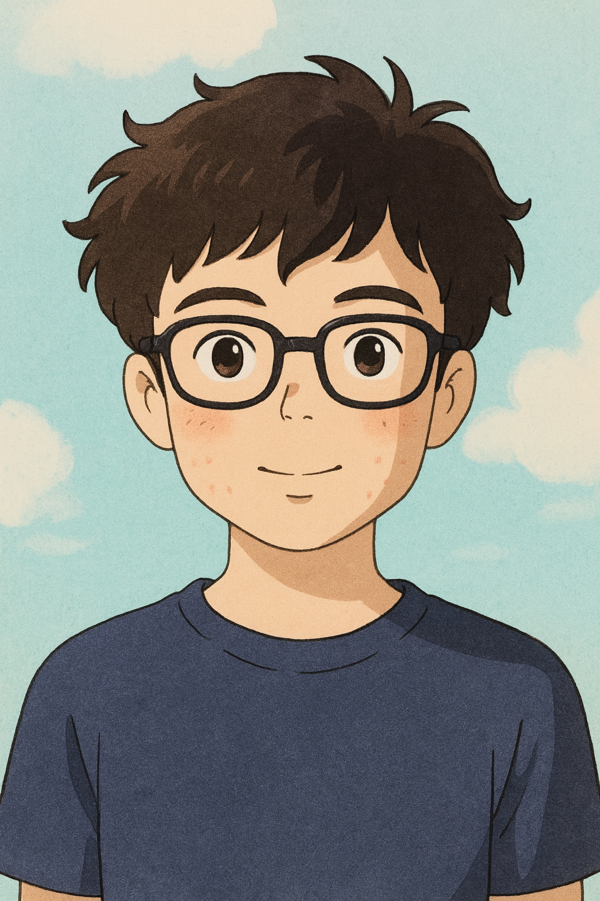

GIỚI THIỆU BẢN THÂN

Tên
Nguyễn Đăng Khoa
Tính cách
Về tính cách, mình là người có trách nhiệm, luôn cố gắng hoàn thành tốt công việc được giao. Dù đôi lúc còn thiếu tự tin, nhưng mình luôn nhắc bản thân phải không ngừng học hỏi và cải thiện mỗi ngày.
Thói quen
Đọc sách là một thói quen mà mình đang duy trì. Mỗi cuốn sách mang lại cho mình những góc nhìn mới về cuộc sống, giúp mình học được cách suy nghĩ sâu sắc hơn và trưởng thành hơn trong suy nghĩ.
Sở thích
Bên cạnh đó, mình cũng yêu thích thể thao, đặc biệt là các hoạt động vận động ngoài trời. Chơi thể thao giúp mình rèn luyện sức khỏe, giải tỏa áp lực và nâng cao tinh thần kỷ luật. Mình cũng thích xem phim nữa
Bộ phim yêu thích